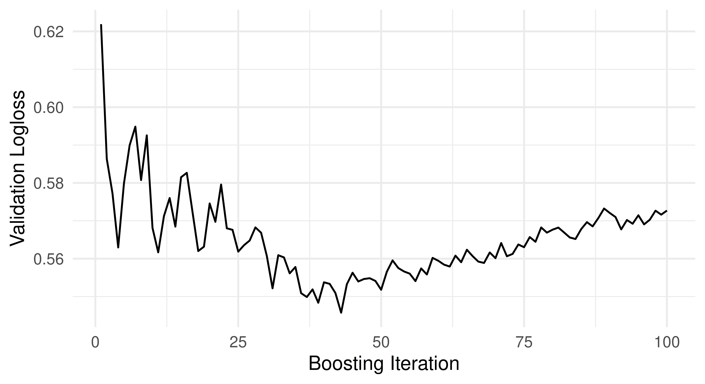
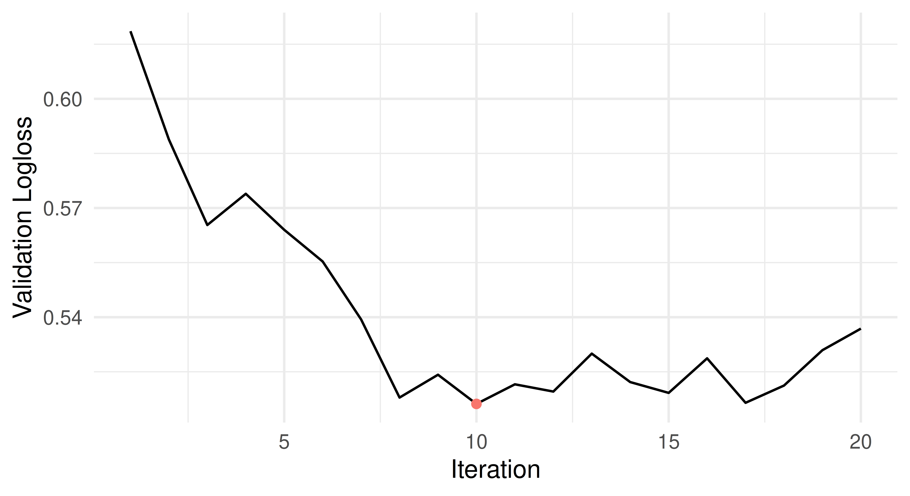
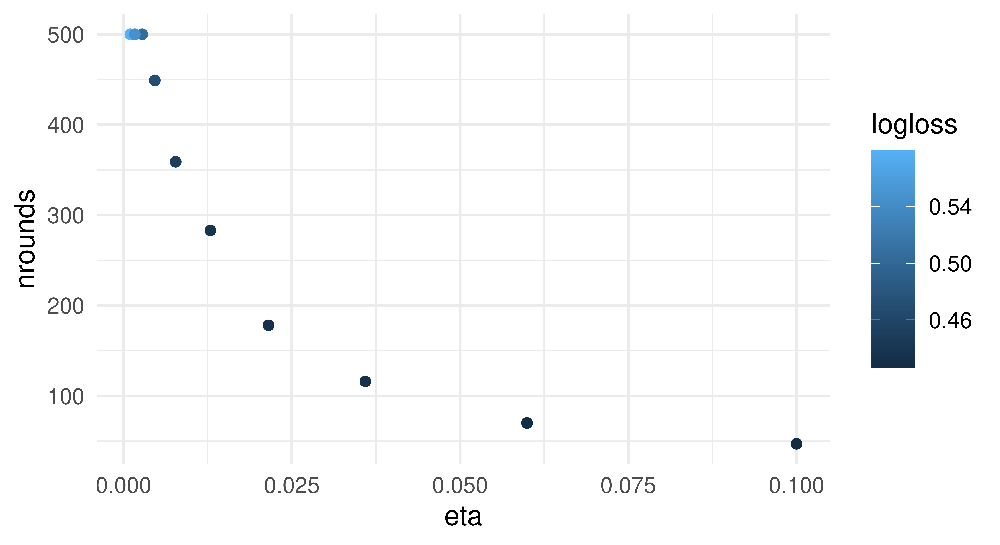

tsk_sonar = tsk("sonar")
lrn_rf = lrn("classif.ranger")
lrn_rf$train(tsk_sonar, row_ids = 4:208)
pred1 = lrn_rf$predict(tsk_sonar, row_ids = 1:3)
pred2 = lrn_rf$predict_newdata(tsk_sonar$data(1:3))15 Predict Sets, Validation and Internal Tuning (+)
Sebastian Fischer
Ludwig-Maximilians-Universität München, and Munich Center for Machine Learning (MCML)
15.1 Predict Sets and Training Error Estimation
In Chapter 3 we have already studied in detail how to train, predict and evaluate many different learners. Evaluating a fully trained model usually requires making predictions on unseen test observations. When we predict directly with a trained learner, we can explicitly control which observations are used:
But when using resample() or benchmark(), the default behavior is to predict on the test set of the resampling. It is also possible to make predictions on other dedicated subsets of the task and data, i.e. the train and internal_valid data, by configuring the $predict_sets of a learner. We will discuss the more complex internal_valid option in the next sections. We will now look at how to predict on train sets. This is sometimes be of interest for further analysis or to study overfitting. Or maybe we are simply curious. Let’s configure our learner to simultaneously predict on train and test:
lrn_rf$predict_sets = c("train", "test")
rr = resample(tsk_sonar, lrn_rf, rsmp("cv", folds = 3))The learner, during resampling, will now after having been trained for the current iteration, produce predictions on all requested sets. To access them, we can either ask for a list of 3 prediction objects, one per CV fold, or we can ask for a combined prediction object for the whole CV – which in this case contains as many prediction rows as observations in the task.
str(rr$predictions("test")) # or str(rr$predictions("train"))List of 3
$ :Classes 'PredictionClassif', 'Prediction', 'R6' <PredictionClassif>
$ :Classes 'PredictionClassif', 'Prediction', 'R6' <PredictionClassif>
$ :Classes 'PredictionClassif', 'Prediction', 'R6' <PredictionClassif> rr$prediction("test") # or rr$prediction("train")<PredictionClassif> for 208 observations:
row_ids truth response
5 R M
6 R M
7 R M
---
200 M M
203 M M
208 M MWe can also apply performance measures to specific sets of the resample result:
rr$aggregate(list(
msr("classif.ce", predict_sets = "train", id = "ce_train"),
msr("classif.ce", predict_sets = "test", id = "ce_test")
))ce_train ce_test
0.0000 0.2065 The default predict set for a measure is usually the test set. But we can request other sets here. If multiple predict sets are requested for the measure, their predictions are joined before they are passed into the measure, which then usually calculates an aggregated score over all predicted rows of the set. In our case, unsurprisingly, the train error is lower than the test error.
If we only want to access information that is computed during training, we can even configure the learner not to make any predictions at all. This is useful, for example, for learners that already (in their underlying implementation) produce an estimate of their generalization error during training, e.g. using out-of-bag error estimates or validation scores. The former, which is only available to learners with the ‘oob_error’ property, can be accessed via MeasureOOBError. The latter is available to learners with the ‘validation’ property and is implemented as MeasureInternalValidScore. Below we evaluate a random forest using its out-of-bag error. Since we do not need any predict sets, we can use ResamplingInsample, which will use the entire dataset for training.
lrn_rf$predict_sets = NULL
rsmp_in = rsmp("insample")
rr = resample(tsk_sonar, lrn_rf, rsmp_in, store_models = TRUE)
msr_oob = msr("oob_error")
rr$aggregate(msr_oob)oob_error
0.1587 All this works in exactly the same way for benchmarking, tuning, nested resampling, and any other procedure where resampling is internally involved and we either generate predictions or apply performance measures on them. Below we illustrate this by tuning the mtry.ratio parameter of a random forest (with a simple grid search). Instead of explicitly making predictions on some test data and evaluating them, we use OOB error to evaluate mtry.ratio. This can speed up the tuning process considerably, as in this case only one RF is fitted (it is simply trained) and we can access the OOB from this single model, instead of fitting multiple models. As the OOB observations are untouched during the training of each tree in the ensemble, this still produces a valid performance estimate.
lrn_rf$param_set$set_values(
mtry.ratio = to_tune(0.1, 1)
)
ti = tune(
task = tsk_sonar,
tuner = tnr("grid_search"),
learner = lrn_rf,
resampling = rsmp_in,
measure = msr_oob,
term_evals = 10,
store_models = TRUE
)15.2 Validation
For iterative training (which many learners use) it can be interesting to track performance during training on validation data. One can use this for simple logging or posthoc analysis, but the major use case is early stopping. If the model’s performance on the training data keeps improving but the performance on the validation data plateaus or degrades, this indicates overfitting and we should stop iterative training. Handling this in an online fashion during training is much more efficient than configuring the number of iterations from the outside via traditional, offline hyperparameter tuning, where we would fit the model again and again with different iteration numbers (and would not exploit any information regarding sequential progress).
In mlr3, learners can have the ‘validation’ and ‘internal_tuning’ properties to indicate whether they can make use of a validation set and whether they can internally optimize hyperparameters, for example by stopping early. To check if a given learner supports this, we can simply access its $properties field. Examples of such learners are boosting algorithms like XGBoost, LightGBM, or CatBoost, as well as deep learning models from mlr3torch. In this section we will train XGBoost on sonar and keep track of its performance on a validation set.
tsk_sonar = tsk("sonar")
lrn_xgb = lrn("classif.xgboost")
lrn_xgb<LearnerClassifXgboost:classif.xgboost>: Extreme Gradient Boosting
* Model: -
* Parameters: nrounds=1, nthread=1, verbose=0
* Validate: NULL
* Packages: mlr3, mlr3learners, xgboost
* Predict Types: [response], prob
* Feature Types: logical, integer, numeric
* Properties: hotstart_forward, importance, internal_tuning,
missings, multiclass, twoclass, validation, weightsTo enable validation, we need to configure how the validation data is constructed. For XGBoost there is a special watchlist parameter, but mlr3 also provides a standardized – and as we will see later, more powerful – interface via the learner’s $validate field. This field can be set to:
-
NULLto use no validation data (default), - a ratio indicating the proportion of training data to be used as the validation set,
-
"predefined"to use the validation data specified in the task (we will see shortly how to configure this), and -
"test"to use the test set as validation data, which only works in combination with resampling and tuning.
Test Data Leakage
If a learner’s $validate field is set to ‘test’, we will leak the resampling test set during training. This will lead to biased performance estimates if the validation scores are used for early stopping. Whether this is desireable depends on the context: if the test set is used to evaluate parameter configurations during HPO (i.e. it acts as a validation set), then this is usually OK; However, if the purpose of the test set is to provide an unbiased estimate of performance, e.g. to compare different learners, then this is not OK.
Below, we configure the XGBoost learner to use \(1/3\) of its training data for validation:
lrn_xgb$validate = 1/3Next, we set the number of iterations (nrounds) and which metric to track (eval_metric) and train the learner. Here, \(1/3\) of the observations from the training task will be solely used for validation and the remaining \(2/3\) for training. If stratification or grouping is enabled in the task, this will also be respected. For further details on this see Chapter 3.
lrn_xgb$param_set$set_values(
nrounds = 100,
eval_metric = "logloss"
)
lrn_xgb$train(tsk_sonar)Because the XGBoost learner kept a log of the validation performance, we can now access this through the $model slot. Where exactly in the model this information is stored, depends on the specific learning algorithm. For XGBoost, the history is stored in $evaluation_log:
tail(lrn_xgb$model$evaluation_log) iter test_logloss
1: 95 0.5715
2: 96 0.5691
3: 97 0.5703
4: 98 0.5727
5: 99 0.5716
6: 100 0.5727The validation loss over time is visualized in the figure below, with the iterations on the x-axis and the validation logloss on the y-axis:

mlr3 also provides a standardized acccessor for the final validation performance. We can access this via the $internal_valid_scores field, which is a named list containing possibly more than one validation metric.
lrn_xgb$internal_valid_scores$logloss
[1] 0.5727In some cases one might want to have more control over the construction of the validation data. This can be useful, for example, if there is a predefined validation split to be used with a task. Such fine-grained control over the validation data is possible by setting the validate field to "predefined".
lrn_xgb$validate = "predefined"This allows us to use the $internal_valid_task defined in the training task. Below, we set the validation task to use 60 randomly sampled ids and remove them from the primary task.
Note that we could have achieved the same by simply setting tsk_valid$internal_valid_task = valid_ids, but showed the explicit way for completeness sake. The associated validation task now has 60 observations and the primary task 148:
c(tsk_sonar$internal_valid_task$nrow, tsk_sonar$nrow)[1] 60 148When we now train, the learner will validate itself on the specified additional task. Note that the $internal_valid_task slot is always used internally, even if you set a ratio value in learner$validate, it is simply automatically auto-constructed (and then passed down).
lrn_xgb$train(tsk_sonar)In many cases, however, one does not only train an individual learner, but combines it with other (preprocessing) steps in a GraphLearner, see Chapter 9. Validation in a GraphLearner is still possible, because preprocessing PipeOps also handle the validation task. While the train logic of the PipeOps is applied to the primary task, the predict logic is applied to the validation data. This ensures that there is no data leakage when the XGBoost learner evaluates its performance on the validation data. Below, we construct a PipeOpPCA and apply it to the sonar task with a validation task.
po_pca = po("pca")
taskout = po_pca$train(list(tsk_sonar))[[1]]
taskout$internal_valid_task<TaskClassif:sonar> (60 x 61): Sonar: Mines vs. Rocks
* Target: Class
* Properties: twoclass
* Features (60):
- dbl (60): PC1, PC10, PC11, PC12, PC13, PC14, PC15, PC16,
PC17, PC18, PC19, PC2, PC20, PC21, PC22, PC23, PC24, PC25,
PC26, PC27, PC28, PC29, PC3, PC30, PC31, PC32, PC33, PC34,
PC35, PC36, PC37, PC38, PC39, PC4, PC40, PC41, PC42, PC43,
PC44, PC45, PC46, PC47, PC48, PC49, PC5, PC50, PC51, PC52,
PC53, PC54, PC55, PC56, PC57, PC58, PC59, PC6, PC60, PC7,
PC8, PC9The preprocessing that is applied to the $internal_valid_task during $train() is equivalent to predicting on it:
po_pca$predict(list(tsk_sonar$internal_valid_task))[[1L]]<TaskClassif:sonar> (60 x 61): Sonar: Mines vs. Rocks
* Target: Class
* Properties: twoclass
* Features (60):
- dbl (60): PC1, PC10, PC11, PC12, PC13, PC14, PC15, PC16,
PC17, PC18, PC19, PC2, PC20, PC21, PC22, PC23, PC24, PC25,
PC26, PC27, PC28, PC29, PC3, PC30, PC31, PC32, PC33, PC34,
PC35, PC36, PC37, PC38, PC39, PC4, PC40, PC41, PC42, PC43,
PC44, PC45, PC46, PC47, PC48, PC49, PC5, PC50, PC51, PC52,
PC53, PC54, PC55, PC56, PC57, PC58, PC59, PC6, PC60, PC7,
PC8, PC9This means that tracking validation performance works even in complex graph learners, which would not be possible when simply setting the watchlist parameter of XGBoost. Below, we chain the PCA operator to XGBoost and convert it to a learner.
glrn = as_learner(po_pca %>>% lrn_xgb)While this almost ‘just works’, we now need to specify the $validate field on two levels:
- For the
GraphLearneritself, i.e. how the validation data is created before theTaskenters the graph. - Which
PipeOps that have the property"validation"should actually use it.
This configuration can be simplified by using set_validate(). When applied to a GraphLearner, we can specify the arguments validate which determines how to create the validation data and optionally the argument ids which specifies which PipeOps should use it. By default, the latter is set to the $base_learner() of the Graph, which is the last learner. This means that both calls below are equivalent:
set_validate(glrn, validate = "predefined")
set_validate(glrn, validate = "predefined", ids = "classif.xgboost")We can now train the graph learner just as before and inspect the final validation metric, which is now prefixed with the ID of the corresponding PipeOp.
glrn$validate = "predefined"
glrn$train(tsk_sonar)
glrn$internal_valid_scores$classif.xgboost.logloss
[1] 0.5765
Field
$validate for PipeOps
Since individual PipeOps cannot control how the validation data is generated, only whether to use it, their $validate field can only be set to NULL or "predefined". This is why we get an error when running as_pipeop(lrn("classif.xgboost", validate = 0.3)). When using validation in a GraphLearner, it is best to first construct the learner without specifying the validation data and then use set_validate().
15.3 Internal Tuning
Not only can XGBoost log its validation performance, it can also monitor it to early stop its training, i.e. perform internal tuning of the nrounds hyperparameter during training. This is marked by the "internal_tuning" property:
"internal_tuning" %in% lrn_xgb$properties[1] TRUEEarly stopping for XGBoost can be enabled by specifying the early_stopping_rounds parameter. This is also known as patience and specifies for how many iterations the validation loss must not improve for the training to terminate. The metric that is used for early stopping is the first value that we passed to eval_metric, which was the logloss.
lrn_xgb$param_set$set_values(
early_stopping_rounds = 10,
nrounds = 100
)When we now train the learner, we can access the internally optimized nrounds through the $internal_tuned_values field.
lrn_xgb$train(tsk_sonar)
lrn_xgb$internal_tuned_values$nrounds
[1] 10By using early stopping, we were able to already terminate training after 20 iterations. Below, we visualize the validation loss over time and the optimal nrounds is marked red. We can see that the logloss plateaus after 10 rounds, but training continues for a while afterwards due to the patience setting.

So far we have only used the early stopping implementation of XGBoost to optimize nrounds, but have not tuned any other hyperparameters. This is where mlr3 comes in, as it allows us to combine the internal tuning of a learner with (non-internal) hyperparameter tuning via mlr3tuning. To do this, we set both parameters to to_tune(), but mark nrounds to be tuned internally.
lrn_xgb$param_set$set_values(
eta = to_tune(0.001, 0.1, logscale = TRUE),
nrounds = to_tune(upper = 500, internal = TRUE)
)In such scenarios, one might often want to use the same validation data to optimize eta and nrounds. This is possible by specifying the "test" option of the validate field. This means that in each resampling iteration the validation data will be set to the test set, i.e. the same data that will also be used to evaluate the parameter configuration (to tune eta).
lrn_xgb$validate = "test"We will now continue to tune XGBoost with a simple grid search with 10 evaluations and a 3-fold CV for inner resampling. Internally, this will train XGBoost with 10 different values of eta and the nrounds parameter fixed at 500, i.e. the upper bound from above. For each value of eta a 3-fold CV with early stopping will be performed, yielding 3 (possibly different) early stopped values for nrounds for each value of eta. These are combined into a single value according to an aggregation rule, which by default is set to averaging, but which can be overridden when creating the internal tune token, see to_tune() for more information.
When combining internal tuning with hyperparameter optimization via mlr3tuning we need to specify two performance metrics: one for the internal tuning and one for the Tuner. For this reason, mlr3 requires the internal tuning metric to be set explicitly, even if a default value exists. There are two ways to use the same metric for both types of hyperparameter optimization:
- Use
msr("internal_valid_scores", select = <id>), i.e. the final validation score, as the tuning measure. As a learner can have multiple internal valid scores, the measure allows us to select one by specifying theselectargument. We also need to specify whether the measure should be minimized. - Set both, the
eval_metricand the tuning measure to the same metric, e.g.eval_metric = "error"andmeasure = msr("classif.ce"). Some learners even allow to set the validation metric to anmlr3::Measure. You can find out which ones support this feature by checking their corresponding documentation. One example for this is XGBoost.
The advantage of using the first option is that the predict step can be skipped because the internal validation scores are already computed during training. In a certain sense, this is similar to the evaluation of the random forest with the OOB error in Section 15.1.
tsk_sonar = tsk("sonar")
lrn_xgb$predict_sets = NULL
ti = tune(
tuner = tnr("grid_search"),
learner = lrn_xgb,
task = tsk_sonar,
resampling = rsmp("cv", folds = 3),
measure = msr("internal_valid_score",
select = "logloss", minimize = TRUE),
term_evals = 10L
)The tuning result contains the best found configuration for both eta and nrounds.
ti$result_learner_param_vals[c("eta", "nrounds")]$eta
[1] 0.1
$nrounds
[1] 47We now show how to extract the different parameter configurations from the tuning archive. All internally tuned parameters are accessible via the $internal_tuned_values. This is a list column, because it is possible to tune more than one parameter internally, e.g. in a GraphLearner. Below we extract the values for eta (transformed back from its log scale), nrounds (internally tuned) and the logloss. The latter was evaluated on the internal validation tasks, which corresponded to the Resampling’s test sets as we specified validate = "test". By visualizing the results we can see an inverse relationship between the two tuning parameters: a smaller step size (eta) requires more boosting iterations (nrounds).
d = ti$archive$data
d = data.table(
eta = exp(d$eta),
nrounds = unlist(d$internal_tuned_values),
logloss = d$logloss
)
ggplot(data = d, aes(x = eta, y = nrounds, color = logloss)) +
geom_point() + theme_minimal()
This also works with an AutoTuner, which will use the internally optimized nrounds, as well as the offline tuned eta for the final model fit. This means that there is no validation or early stopping when training the final model, and we use all available data.
at = auto_tuner(
tuner = tnr("grid_search"),
learner = lrn_xgb,
resampling = rsmp("cv", folds = 3),
measure = msr("internal_valid_score",
select = "logloss", minimize = TRUE),
term_evals = 10L
)
at$train(tsk_sonar)If we were to resample the AutoTuner from above, we would still get valid performance estimates. This is because the test set of the outer resampling is never used as validation data, since the final model fit does not perform any validation. The validation data generated during the hyperparameter tuning uses the test set of the inner resampling, which is a subset of the training set of the outer resampling.
However, care must be taken when using the test set of a resampling for validation. Whether this is OK depends on the context and purpose of the resampling. If the purpose of resampling is to get an unbiased performance estimate of algorithms, some of which stop early and some of which don’t, this is not OK. In such a situation, the former would have an unfair advantage over the latter. The example below illustrates such a case where this would not be a fair comparison between the two learners.
lrn_xgb$param_set$set_values(
eta = 0.1, nrounds = 500, early_stopping_rounds = 10
)
lrn_xgb$predict_sets = "test"
design = benchmark_grid(
tsk_sonar, list(lrn_xgb, lrn("classif.rpart")), rsmp("cv", folds = 3)
)
bmr = benchmark(design)
bmr$aggregate(msr("classif.ce")) nr task_id learner_id resampling_id iters classif.ce
1: 1 sonar classif.xgboost cv 3 0.1972
2: 2 sonar classif.rpart cv 3 0.2836
Hidden columns: resample_resultAt last, we will cover how to enable internal tuning when manually specifying a search space with the ps() function instead of the to_tune()-mechanism. While the latter is more convenient and therefore usually recommended, manually defining a search space gives you for more flexibility with respect to parameter transformations, see e.g. Section 4.4.3. There are two ways to do this: 1. We can include the internally tuned parameters in the primary search_space, specify an aggregation function and tag them with "internal_tuning". 2. We define a seperate internal_search_space where we also define the aggregation function but don’t include the "internal_tuning" tag.
We start by illustrating the first approach, which is more compact as the search space is defined as a single object.
search_space = ps(
eta = p_dbl(0.001, 0.1, logscale = TRUE),
nrounds = p_int(upper = 500, tags = "internal_tuning",
aggr = function(x) as.integer(mean(unlist(x))))
)This search space can be passed to the AutoTuner and the optimization will then proceed as before.
at = auto_tuner(
tuner = tnr("grid_search"),
learner = lrn_xgb,
resampling = rsmp("cv", folds = 3),
measure = msr("internal_valid_score",
select = "logloss", minimize = TRUE),
search_space = search_space,
term_evals = 10L
)
at$train(tsk_sonar)One reason to use the second approach is when a global parameter transformation (.extra_trafo) is applied to the primary search space. Univariate transformation, such as logarithmic scaling, are no problem. Below, we demonstrate this using an illustrative example where we sample set the max_depth of the trees depending on the value of eta:
search_space = ps(eta = p_dbl(0.001, 0.1, logscale = TRUE),
.extra_trafo = function(x, param_set) {
x$max_depth = if (exp(x$eta) < 0.01) 10 else 20
x
})
internal_search_space = ps(
nrounds = p_dbl(upper = 500, tags = "internal_tuning",
aggr = function(x) as.integer(mean(unlist(x))))
)
at = auto_tuner(
tuner = tnr("grid_search"),
learner = lrn_xgb,
resampling = rsmp("cv", folds = 3),
measure = msr("internal_valid_score",
select = "logloss", minimize = TRUE),
search_space = search_space,
internal_search_space = internal_search_space,
term_evals = 10L
)
at$train(tsk_sonar)15.4 Conclusion
In this chapter we first learned how to evaluate machine learning methods on different prediction sets, namely train, internal_valid and test. Then we learned how to track the performance of an iterative learning procedure on a validation set. This technique also works seamlessly in a graphlearner, the only difference being that you have to specify not only how to create the validation data, but also which PipeOps should use it. Furthermore, mlr3’s internal tuning mechanism allows you to combine hyperparameter tuning via mlr3tuning with internal tuning of the learning algorithm, such as early stopping of XGBoost.
15.5 Exercises
Manually
$train()a LightGBM classifier frommlr3extralearnerson the pima task using \(1/3\) of the training data for validation. As the pima task has missing values, select a method frommlr3pipelinesto impute them. Explicitly set the evaluation metric to logloss ("binary_logloss"), the maximum number of boosting iterations to 1000, the patience parameter to 10, and the step size to 0.01. After training the learner, inspect the final validation scores as well as the early stopped number of iterations.Wrap the learner from exercise 1) in an
AutoTunerusing a three-fold CV for the tuning. Also change the rule for aggregating the different boosting iterations from averaging to taking the maximum across the folds. Don’t tune any parameters other thannrounds, which can be done usingtnr("internal"). Use the internal validation metric as the tuning measure. Compare this learner with alrn("classif.rpart")using a 10-fold outer cross-validation with respect to classification accuracy.-
Consider the code below:
branch_lrn = as_learner( ppl("branch", list( lrn("classif.ranger"), lrn("classif.xgboost", early_stopping_rounds = 10, eval_metric = "error", eta = to_tune(0.001, 0.1, logscale = TRUE), nrounds = to_tune(upper = 1000, internal = TRUE))))) set_validate(branch_lrn, validate = "test", ids = "classif.xgboost") branch_lrn$param_set$set_values(branch.selection = to_tune()) at = auto_tuner( tuner = tnr("grid_search"), learner = branch_lrn, resampling = rsmp("holdout", ratio = 0.8), # cannot use internal validation score because ranger does not have one measure = msr("classif.ce"), term_evals = 10L, store_models = TRUE ) tsk_sonar = tsk("sonar")$filter(1:100) rr = resample( tsk_sonar, at, rsmp("holdout", ratio = 0.8), store_models = TRUE )Answer the following questions (ideally without running the code):
3.1 During the hyperparameter optimization, how many observations are used to train the XGBoost algorithm (excluding validation data) and how many for the random forest? Hint: learners that cannot make use of validation data ignore it. 3.2 How many observations would be used to train the final model if XGBoost was selected? What if the random forest was chosen? 3.3 How would the answers to the last two questions change if we had set the
$validatefield of the graphlearner to0.25instead of"test"? -
Look at the (failing) code below:
tsk_sonar = tsk("sonar") glrn = as_learner( po("pca") %>>% lrn("classif.xgboost", validate = 0.3) )Can you explain why the code fails? Hint: Should the data that xgboost uses for validation be preprocessed according to the train or predict logic?
15.6 Citation
Please cite this chapter as:
Fischer S. (2024). Predict Sets, Validation and Internal Tuning (+). In Bischl B, Sonabend R, Kotthoff L, Lang M, (Eds.), Applied Machine Learning Using mlr3 in R. CRC Press. https://mlr3book.mlr-org.com/predict_sets,validation_and_internal_tuning(+).html.
@incollection{citekey,
author = "Sebastian Fischer",
title = "Predict Sets, Validation and Internal Tuning (+)",
booktitle = "Applied Machine Learning Using {m}lr3 in {R}",
publisher = "CRC Press", year = "2024",
editor = "Bernd Bischl and Raphael Sonabend and Lars Kotthoff and Michel Lang",
url = "https://mlr3book.mlr-org.com/predict_sets,_validation_and_internal_tuning_(+).html"
}